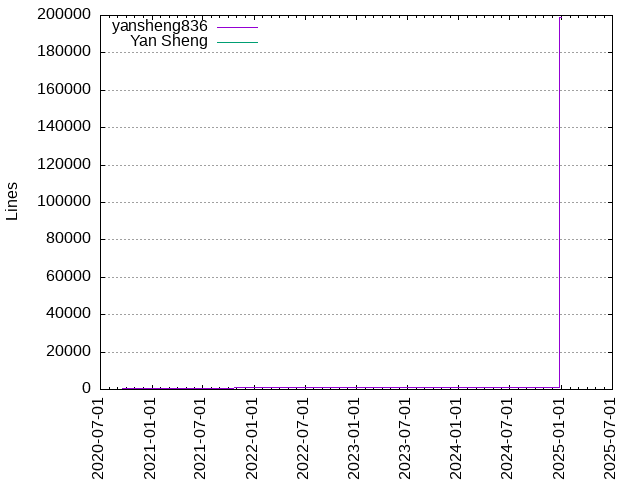

Authors
| Author | Commits (%) | + lines | - lines | First commit | Last commit | Age | Active days | # by commits |
|---|
| kohsuke | 7210 (20.17%) | 441131 | 107588 | 2006-11-05 | 2010-11-20 | 1475 days, 5:16:23 | 1024 | 1 |
| Kohsuke Kawaguchi | 6028 (16.86%) | 167384 | 172815 | 2010-11-18 | 2020-07-13 | 3525 days, 9:54:55 | 1226 | 2 |
| Jesse Glick | 3901 (10.91%) | 102004 | 153257 | 2010-12-08 | 2024-12-20 | 5125 days, 23:28:13 | 1140 | 3 |
| Daniel Beck | 1689 (4.73%) | 44970 | 38592 | 2013-07-18 | 2024-12-04 | 4156 days, 17:37:53 | 779 | 4 |
| Oleg Nenashev | 1459 (4.08%) | 17020 | 4737 | 2013-08-12 | 2021-12-19 | 3051 days, 13:24:42 | 657 | 5 |
| dependabot[bot] | 927 (2.59%) | 4547 | 6785 | 2020-10-12 | 2024-12-11 | 1520 days, 22:05:10 | 534 | 6 |
| renovate[bot] | 807 (2.26%) | 22292 | 21699 | 2022-07-21 | 2024-12-23 | 886 days, 20:54:53 | 417 | 7 |
| Basil Crow | 753 (2.11%) | 78187 | 76529 | 2019-01-31 | 2024-12-17 | 2146 days, 10:01:56 | 395 | 8 |
| Oliver Gondža | 603 (1.69%) | 14627 | 7909 | 2012-10-09 | 2020-08-01 | 2852 days, 23:00:57 | 358 | 9 |
| Stephen Connolly | 565 (1.58%) | 21526 | 7725 | 2011-03-10 | 2018-12-04 | 2826 days, 3:55:31 | 190 | 10 |
| Jenkins Release Bot | 505 (1.41%) | 4737 | 4737 | 2020-06-30 | 2024-12-19 | 1633 days, 2:45:22 | 242 | 11 |
| mindless | 498 (1.39%) | 13773 | 8047 | 2008-12-16 | 2010-11-21 | 704 days, 20:43:34 | 263 | 12 |
| Olivier Lamy | 495 (1.38%) | 6882 | 12835 | 2010-12-06 | 2024-05-09 | 4902 days, 20:13:59 | 210 | 13 |
| Tim Jacomb | 377 (1.05%) | 33736 | 30920 | 2019-07-03 | 2024-12-22 | 1999 days, 3:23:08 | 227 | 14 |
| sogabe | 310 (0.87%) | 11625 | 3021 | 2008-05-08 | 2010-11-20 | 925 days, 20:49:07 | 184 | 15 |
| Christoph Kutzinski | 305 (0.85%) | 23186 | 2417 | 2011-03-14 | 2013-08-18 | 887 days, 20:13:03 | 122 | 16 |
| tfennelly | 293 (0.82%) | 27268 | 10043 | 2014-06-13 | 2016-05-03 | 689 days, 23:30:28 | 92 | 17 |
| Wadeck Follonier | 269 (0.75%) | 30262 | 5935 | 2017-10-09 | 2024-07-11 | 2466 days, 22:48:11 | 138 | 18 |
| Baptiste Mathus | 261 (0.73%) | 4691 | 3718 | 2011-08-31 | 2021-06-03 | 3563 days, 6:57:30 | 141 | 19 |
| Vincent Latombe | 244 (0.68%) | 9246 | 2855 | 2011-04-06 | 2024-12-19 | 5005 days, 11:39:33 | 160 | 20 |
These didn't make it to the top: Seiji Sogabe, Josh Soref, Jan Faracik, Mark Waite, Jeff Thompson, Nicolas De Loof, James Nord, jglick, Alexander Brandes, Stefan Spieker, Raihaan Shouhell, imod, Harald Albers, Andrew Bayer, Vojtech Juranek, abayer, stephenconnolly, Félix Queiruga, cactusman, Matt Sicker, Markus Winter, elefevre, recena, swiest, huybrechts, Manuel Recena, kzantow, christ66, Devin Nusbaum, gusreiber, Kanstantsin Shautsou, OHTAKE Tomohiro, Nicolas De loof, olivier lamy, Arnaud Héritier, bagrehc, Valentina Armenise, Ryan Campbell, CloudBees DEV@Cloud, StefanSpieker, alanharder, oguzdag, Ing. Pavel Janousek, Jerome Lacoste, ikedam, Alex Earl, Fred G, Damian Szczepanik, surenpi, Ulli Hafner, Will Ross, Robert Sandell, lvotypko, Richard Mortimer, redsolo, dty, Antonio Muñiz, dwdyer, suren, Mustafa Ulu, Tom Huybrechts, R. Tyler Croy, Felix Belzunce Arcos, Christopher Simons, Ramon Leon, vjuranek, Jesse Farinacci, olamy, jbq, EBIBO, Christopher Orr, Alex, dvrzalik, Zbynek Konecny, Tom Fennelly, release-bot, manuel_carrasco, ssogabe, Sami Tikka, Pei-Tang Huang, beta, Romén Rodríguez-Gil, M Ramon Leon, David Hoover, Allan Burdajewicz, rseguy, frankie139506, René Scheibe, Patrick McKeown, Langer0416, Stefan Wolf, Sam Van Oort, André Twupack, liorha, Hervé Le Meur, res0nance, offa, Yen Cheng, Keith Zantow, Joseph Petersen, Daniel Spilker, Alceu Rodrigues de Freitas Junior, kuuyee, Steven Post, Craig Rodrigues, mike cirioli, bap2000, Marcin Zajączkowski, Kevin Burke, Emilio Escobar, Casey Duquette, Bruno Kühnen Meneguello, Olav Reinert, Kris Stern, wyukawa, sorokh, Yoann Dubreuil, StevenGBrown, René Moser, Mirko Friedenhagen, Matt Moore, Ikko Ashimine, Fernando Boaglio, mdonohue, benebsiny, Vojtěch Juránek, Thorsten Scherler, Peter Eisentraut, NotMyFault, Nigel Magnay, Michael Clarke, Erik Molekamp, Andres Rodriguez, Akbashev Alexander, unknown, pgweiss, martinficker, kutzi, Yaroslav, Thomas de Grenier de Latour, Tejas, Kseniia Nenasheva, Ivan Fernandez Calvo, Brian Atkinson, Antonio Muniz, Tim Van Holder, Takashi Harano, Pavel Janousek, Michael Koch, Marat Radchenko, Kevin-CB, Dave Brosius, Alvaro Lobato, Adrien Lecharpentier, vsizikov, valentina, phoenix384, petehayes, gcummings, drulli, charanb1r, Yaroslav Afenkin, Ullrich Hafner, Paul Sandoz, Mysterious_Dev, Giulio D'Ambrosi, Daniel Trebbien, shinodkm, redlab, laurence-h, jazzjack, godin, godfath3r, github-actions[bot], evernat, Stephan Pauxberger, Peter Jonsson, Nikolas Falco, Mads Nielsen, Johno Crawford, John Pederzolli, Fritz Elfert, Francisco Fernández, David Olorundare, Damien Finck, Anne-Laure Gaillard, Alexander Akbashev, lucinka, jjasper, bwestrich, aman, Tomas Straupis, Riliane, Raul Arabaolaza, Peter Marcoen, Peter Darton, Mark Wynn-Mackenzie, Marco Miller, Larry Shatzer, Jr, Kevin Guerroudj, Kamran Mackey, Julien Greffe, Ignacio Albors, Dominique, Chris Arnott, Andrew Kiellor, Abhishek Maity, A. Jard, stellargo, ramapulavarthi, lucamilanesio, laurents59, lacostej, kaxelson, jieryn, jheymans, hwellmann, Zhao Xiaojie, Tomas, Tim Lantz, Sumit Sarin, Solène Garda-Krebs, Simon Wiest, Pierre Beitz, Nicolae Pascu, Monty Taylor, Manuel Blechschmidt, Larry North, Johannes Ernst, Gavin Mogan, Francisco Javier Fernandez Gonzalez, Christian Wolfgang, Calvin Park, Alex Lehmann, zbynek, wjprakash, sghill, qxo, mode, mdillon, mawinter69, masanobuimai, lifeless, jacob_robertson, gulyaev13, frizbog, brucechapman, anafke, amuniz, Waldyr, Steve Arch, Si-So, Pedro Rodriguez, Olivier Dagenais, Olaf Lenz, Michael Prankl, Michael Pailloncy, Martijn Baay, Manolo Carrasco, Kevin Connor, Joris de Vries, Jon, Jochen Fürbacher, Ho Yi Wei, Gentle Yang, Erik Ramfelt, Donny Nadolny, Dmitry Platonov, Denys Digtiar, Dean Yu, David Rutqvist, Damien Duportal, Bob Du, Artem V. Navrotskiy, Andrea Scarpino, Alexander Shopov, Albert So, stephlag, sfarbota, rtyler, mleinart, mcrooney, marco, lshatzer, limin wang, liketic, km, kevinlin18, kel, joyyc, ikikko, draco2k8, ddavison, davidho0403, ctapobep, based2, austry, atcarmo, ashlux, appr, aHenryJard, Vivek Pandey, Viktor Suprun, Victor, Tommy Sparber, Tim Pizey, Tim Lander, Thomas Van Doren, Ted, Sylvestre Ledru, Stephan Reiter, Solène, Shawn McCarthy, Sam Gleske, Rebecca Ysteboe, Raphael Pionke, Peter Major, Peter Liljenberg, Paul Kilgo, Olivier Truong, Oli Dagenais, Mykola Nikishov, Mit Naria, Michael Keppler, Matt Legrand, Martin Nowak, Marc Guenther, Long Ngn, Kyle Allan, Ksenia Nenasheva, Kevin Sawicki, Josiah Haswell, Jonas, Joel Johnson, Jens Brejner, Jean-Baptiste Le Duigou, Ingo Richter, Grogdunn, Greg Temchenko, Esther Álvarez Feijoo, Erwan de FERRIERES, Emrullah YILDIRIM, Emanuele Zattin, Egor18, Egor Bredikhin, Craig Ringer, Cliffano Subagio, Chris Cosby, Bartosz Nowak, Andrius Štikonas, Andrey Myatlyuk, Andrew Mann, Andrew Erickson, Anders Hammar, Alessandro Menti, Abhyudaya Sharma, Łukasz Jąder, xlv, wolfs, wolfgarnet, willemv, vlatombe, vb-linetco, urkon, tblack, tatoberres, t-hall, szczechp, slide, samngms, runzexia, rudolfwalter, rednuht, rbair, quinox, puug, pascal910107, olivierlemasle, lpancescu, kiy0taka, jtnord, jpederzolli, jesse-houghton, jasonchaffee, ialbors, hunkim, hayderimran7, ge-vi, fujibee, frankie, fbonerandi, dwightguth, dwelden, dlemos, dbroady1, contextshuffling, cjo9900, chris.arnott@softwire.com, bruyeron, bpedersen2, bale836, aviadatsnyk, andrealaura, alexkoon, Yen Cheng Lin, Wil Moore III, Wei-Chin Huang, Wadeck, Valentin Delaye, ValHaris, Toomas Romer, Tomer Cohen, Tomek Szmytka, Timka, ThomasPerkins1123, Thomas Suckow, Thiago Zanetti, SujathaH, Steven Christou, Sergiu Dumitriu, Samuel Moritz, Sam Griff, Robert Elliot, Rishabh Budhouliya, Reynald Borer, Reinhold Füreder, ReadmeCritic, Raúl Arabaolaza Barquin, Piush, Piotr Wielgolaski, Pavel Cvrcek, Pavel Avgustinov, Pauline Iogna, Paul Weiss, Nisarg Shah, Nguyen Le Vu Long, NextTurn, Nathan Parry, N Nachiappan, Mikko Peltonen, Mike Robinet, Mike Ajala, Michal Srb, Michael Neale, Matthias Vach, Matthew Reiter, Matt Mitchell, Matt Kraai, Martin Schroeder, Martin Pokorny, Marat Talipov, Manuel, Mahmut Can Sozeri, Literallie, Liam Newman, Lee Lavery, Laurence, Kevin P. Fleming, Kenichi Maehashi, Kayla Altepeter, Kai Inkinen, KOMATSU Seiji, Jørgen P. Tjernø, Jyrki Puttonen, Julien Coste, Julian Schmidt, Joshua Keroes, Joseph, Jonathan Fuentes, Jens Hausherr, Jean-Philippe Briend, Jan Zuchhold, Jan Meiswinkel, Ivan Meredith, Ilya Zasimov, Ilya Gulyaev, Ikko Eltociear Ashimine, Hughes, Wilfred (London), Hayato ITO, Gleb Nikonorov, Gili Tzabari, Gabriel Belingueres, Freddie Vargus, Francisco Ruiz, Francis Labrie, Filipe Roque, Félix Belzunce Arcos, Federico Pellegrin, Evaristo Gutiérrez, Esther Alvarez Feijoo, Esa Laine, Erik Lindblad, Eric Yu, Elvys Soares, Elbandi, Drew Repasky, Desprez Jean-Marc, Debayan Ghosh, David Ruhmann, David M. Carr, Darío Villadiego, Darin Pope, Daniel Khodaparast, César Soto Valero, Cyrille Le Clerc, Curt Moore, Costin Caraivan, Ciprian Ciubotariu, Christopher Siden, Christof Schoell, Carroll Chiou, Carlos Sanchez, Carlos Rendon, Carl-Frederik Hallberg, Carl Quinn, Carbenium, Bruno P. Kinoshita, Bruno Meneguello, Brian Moyles, Berno Langer, Bartosz Kaszubowski, Andrew J. Erickson, Anders Kindberg, Aleksas Pielikis, Akshay Dayal, Adrian Cole, Adam Wolf, 김세환, 秋 雨落, 唐明, yogeek, xndcn, xGhOsTkiLLeRx, wojtekxtx, vt, vojtechhabarta, vivek, vincentkok, vglushenkov, varmenise, usmonster, tploss, tn-osimis, tjramos, tinexw, thomas@katalisindonesia.com, testfixer, tequillaz, teilo, tbingaman, tarul, talkdirty, strangelookingnerd, stochmim, stigkj, sratz, slavino, silent-snowman, shenxianpeng, sgargel, segalaj, samhrncir, rysteboe, russellbarnes, ruoxijiang, rsandell, rocio27jul, peter-kutak, peppelan, pbe-axelor, pamdirac, pagio81, orgi, olivergondza, nom3ad, nmullaney, nlabrot, n8felton, mveunen, murank, muhammedeminakbulut, mstarzyk, mspring, mrebasti, mjaggard, michmerr, michael cirioli, mfriedenhagen, megathaum, mcupak, mcdonan, mc1arke, mathieu-pousse, magesfc, madhead, mPokornyETM, lucaspanjer, lqli, lorainsu, liucc52, lgoenner, lgemeinhardt, lecric, laenco, kshultzCB, kphonik, knupouls, kkkon, kiyaev, kdanW, kbrowder, kbertelson, kalecser, justinedelson, jsiirola, joeljohnson, jhonDoe15, jhm, jean pierre Lerbscher, javadude, j.graumann@web.de, istrangiu, intelradoux, hplatou, growfrow, gonrial, gmjck, gliptak, fred-o, fma1977, f_cavarretta, ertanden, edwardpro, eduardojandre, edh-oss, dsrink, dodok1, dnadolny, digerata, davidseymore, davidmc24, david_calavera, david_beutel, cynipe, cui fliter, csteiner, csiden, cleibersilva, chris-daw, charanbir, chandrodayv, cesarsotovalero, c3johnso, bshine, boev, bill007110, bhenderson, benru, basil3whitehouse, baptiste, baileys, apetres, anxk, andi, albers, akshayabd, ajpurkiss, aitor alzola, againjj, aabeling, Zongle Wang, Zhun-Wei Liu, Zhenlei Huang, Zdeněk Soukup, Your Name, Youngrok Kim, Yoichi Nakayama, Yanjun Shi, Xi Qi, Xavier Jouvenot, Wynn Netherland, Wilfred Hughes, Werner Beroux, Wedge Jarrad, Wade Carpenter, Vladimir Kravets, Vitalii Tymchyshyn, Vincent LATOMBE, Victor Ott, Victor Martinez, Veres Lajos, Vento, Tyler Stachecki, Tully Dwyer, Trung Pham, Tristan FAURE, Tom Rini, Tom Payne, Tollef Fog Heen, Tobias Gruetzmacher, Tidhar Klein Orbach, Tianyao Chen, Thorsten Möllers, Thomas Pilot, Thomas Morse, Thierry Wasylczenko, Thiago Henrique Hüpner, TheLastPossibleUsernameEver, Tasuku Nakagawa, Taehong Kim, Søren A D, Szymon Biliński, Szalay Kristóf, Surya Gaddipati, Stéphane MERLE, Stuart McCulloch, Steve Hill, Stephen Ware, Stephen Souness, Stefan Brausch, Spike Washburn, Sorin Sbarnea, Somasekhar, Smith Chang, Slide, Sladyn Nunes, Singh, Abhinav Kumar, Simon Andrews, Sho Matsumoto, Sergey Burkov, Sereinity, Sebastien Guillemot, Sebastian Rakel, Sebastian Rahlf, Sean Sullivan, Scott K Logan, Scott Hebert, Sayanta Banerjee, Sathiya Narayanan, Sascha Scholz, Sascha Peilicke, Santiago Castro, Santhosh-CloudB, Samuel Mehrbrodt, Samuel Langlois, Sam Hrncir, Saarthak Maini, SNanda8895, Ryan Maki, Rupin R Nath, Rowan Hill, Ronny Perinke, Ronald Tschalär, Rodrigo Victor, Robin Naundorf, Roberto C. Salome, Robert Shade, Robert Rabe, Rob van Oostrum, Rob Petti, Richie Vos, Richard Bywater, Reginaldo Russinholi, Rahul Somasunderam, Rahul Reddy, Rafael de Paula, Rafa de la Torre, Radosław Antoniuk, Radek Antoniuk, R. Tyler Ballance, Quentin Dufour, Pushkar Mahajan, Puru Tuladhar, Prayag Verma, Pierre-Louis Bonicoli, Pierre Dal-Pra, Philipp Homann, Peter Russell, Peter Hayes, Peter Dave Hello, Peiming Chen, Patrik Boström, PJ Fanning, Oğuzhan Çevik, Owen Mehegan, Otmane TAZI, Oskars Pakers, Olivier Lemasle, Nolan Lawson, NivKeidan, Niral Maruda, Nico, Nick Dimiduk, Nathan Grubb, Nate Tranel, NGK Sternhagen, Mümin Köykıran, Munawar, Muhammed Akbulut, Minghao Li, Milan Kyselica, Mikhail Kalkov, Mikel Ortega, Mikel Larreategi, Mike Power, Mike Glazer, Michal Slusarczyk, Michael Strasser, Michael Smith, Michael Prokop, MatthiasSchmalz, Matthias Kraft, Matthew Brener, Matthew Barr, Matt Pulver, Matt Blair, Martin Schröder, Mark Field, Marius Karnauskas, Marius Gedminas, Marcus Jacobsson, Marcos Bento, MarcoAurelioWM, Marco Wulf, Marc Jansen, Marc Guillemot, Mani Prathi, Magnus Reftel, Mads Rolsdorph, Mads Dam Jakobsen, Madis Pärn, Lyle Hanson, Lutz Neugebauer, Luke Robertson, Luke Petre, Lukasz Jader, Lucien Weller, Lucie Votypkova, Logan Mzz, Logan Gorence, Limin Wang, Leonardo Rossetti, Laurent Contzen, Lars Hvile, Larry Singleton, Kyle Beal, Kyle A. Matheny, Kshithij Iyer, Krzysztof Rakowski, Krzysztof Knapik, Kristian Rosenvold, Krishan Bhasin, Konstantin Nisht, Konstantin Bulanov, Kohei Suzuki, KevinRealAlcalde, Kevin Formsma, Kevin, Kenneth Garland, Ken Bertelson, Kazuhiro NISHIYAMA, Karthick Prabu, Kannan Manickam, Kamil Szymański, Kamil Szymanski, Kamil Kisiel, Ka-Wing, Jānis, Jérôme Pochat, Justin Santa Barbara, Julien HENRY, Julien Carsique, Julie Heard, Jukka Lehtniemi, Juan Jesús Alejo Sillero, Joshua Kolash, Josh Gibbs, Jordi Mas, Jongwoo Han, Jonathan A. Sternberg, Jonas Lind, Jon Brohauge, Johnbo, John McNally, John Losito, John Lin, John Lamb, Johan Sigfred Abildskov, Johan Lübcke, Joe Sondow, Jochen A. Fürbacher, Jo Shields, Jez Halford, Jerome DPG, Jennifer Briden, Jenn Briden, Jenkins admin, Jeff Pearce, Jeff MAURY, Jean Blanchard, Janick Reynders, Jan Štourač, Jan Vansteenkiste, Jan Jansen, James Page, James Martinez, James Byers, Jakub Štiller, Jakub Wojnarowicz, Jakub Cechacek, Jakob Ackermann, JTSweet, JJ Asghar, Isaac, Inetov, Imran Hayder, Ilya, Ildefonso Montero, Idan Bidani, IanKemp, Ian Hopkins, Huikun Zheng, Hubert Woszczyk, Holger Voormann, Hiven Ou, Hiroshi Saito, Hildebrand Soethoudt, Hervé Boutemy, Henrik Ygge, Hendrik Millner, Helen, Hans-Joachim Kliemeck, Hangsu Ma, Gustavo de Souza Bezerra, Gustaf Lundh, Gunnar Wrobel, Grégory Coutant, Greg Swift, Greg Inozemtsev, Greg Heartsfield, Greg Dubicki, Greg Albrecht, Grace Tang, Glöckle Bastian, Gil Forcada Codinachs, Gergely Nagy, George Shakhnazaryan, George Gastaldi, Gavin Fenton, Galo Navarro, Gabriel Lavoie, GRILLON Stéphane, GLundh, Frolov Dmitry, Francois-D, Francois Campbell, Francisco Capdevila, Florian Berchtold, Flavio Costa, FilipRazek, Felix Queiruga, FLOCHLAY Sebastien, Evgeny Mandrikov, Eugene Baranov, Eric Weikl, Eric Dalquist, Emmanuel Bourg, Elton Alves, Eito Katagiri, Egor Ivanov, Edmund Wong, Ed Bartosh, Dustin R. Welden, Durgadas Kamath, Doug Alcouffe, Dominik Bartholdi, Dominic Mitchell, Dmitri Karpovich, Divya S, Dirk Thomas, Dirk Pahl, Dimitri BAELI, Dillon Amburgey, Denis Shvedchenko, David Strauss, David Reiss, David McFarland, David Hewson, David Alberto, Dave Hunt, Darryl Pogue, Daniel Weber, Daniel Olausson, Daniel Lorch, Daniel Hahler, Damien Nozay, Dalibor Plavcic, Daeho Ro, DJ Lee, Cynthia Iradukunda, Craig P. Motlin, Coley Woyak, Cliff Maury, Claudiu Guiman, Christopher Molin, Christoph Thelen, Christoffer Sawicki, Casey, Carlos Tadeu Panato Junior, Carlos Monteiro, CJ Barker, Burk Hufnagel, Bráulio Bezerra, Bryson Gibbons, Bruno Perel, Brian Lalor, Brendan Nolan, Brady Shober, Brad Trimby, Boris, Bogdan Sukonnov, Bob Maertz, Bjoern Kasteleiner, Bernie Schelberg, Bernhard Grünewaldt, Bernard Leach, Benoit Lacelle, Benjamin Herbert, Benjamin Cabé, Ben Walding, Ben Parees, Ben McCann, Ben Lau, Ben Gamari, Baptiste Mille-Mathias, Balaji Sivasakthi, Aurelie Salles, Arnaud TAMAILLON, Arnaud Heritier, Ariel Peltz, Ari Hyttinen, Arcadiy Ivanov, Antonio, Antoine Neveux, Anish Dangi, Anh Duy, Andy Neebel, Andreyev Dias de Melo, Andrey Klochkov, Andrey Grigorov, Andrew Stucki, Andrew Stone, Andrew Melo, Andrew Bradley, Andrei Neagu, Andre Miranda, Andi Pabst, Amaury, Alon Bar-Lev, Alfonso Cora, Alexey Iakhnenko, Alexey, Alexandre Vanhecke, Alexandre Garnier, Alexander Link, Alex Taylor, Alex Rovner, Alex Blackwell, Alex Bertram, Aleksas, Aleksandr Kiiaev, Aleksandar Đuričin, Alberto Gragera, AlaureGaillard, Akihrio Kiuchi, Aitor Alzola, Afzal Ansari, Adrien Gallou, Absh-Day, Abhishek Kumar, Abhijeet Chatterjee, Aaron Zurawski, Aakash R Kanvinde, ADSL, A. Regnander, 97gushan
Only top 20 authors shown

Only top 20 authors shown
| Month | Author | Commits (%) | Next top 5 | Number of authors |
|---|
| 2024-12 | renovate[bot] | 43 (46.24% of 93) | Kris Stern, Jenkins Release Bot, Tim Jacomb, Jan Faracik, Jesse Glick | 17 |
| 2024-11 | renovate[bot] | 49 (56.98% of 86) | Jenkins Release Bot, Tejas, Jesse Glick, Daniel Beck, Basil Crow | 15 |
| 2024-10 | renovate[bot] | 88 (59.86% of 147) | Basil Crow, Jenkins Release Bot, Vincent Latombe, Devin Nusbaum, Jan Faracik | 20 |
| 2024-09 | renovate[bot] | 49 (50.52% of 97) | Jenkins Release Bot, Jan Faracik, Basil Crow, Vincent Latombe, Thorsten Scherler | 16 |
| 2024-08 | renovate[bot] | 63 (49.61% of 127) | Vincent Latombe, Basil Crow, Jenkins Release Bot, Markus Winter, Tim Jacomb | 19 |
| 2024-07 | renovate[bot] | 25 (27.47% of 91) | dependabot[bot], Jenkins Release Bot, Vincent Latombe, Jesse Glick, Basil Crow | 12 |
| 2024-06 | renovate[bot] | 23 (28.40% of 81) | dependabot[bot], Jenkins Release Bot, Basil Crow, Jan Faracik, Markus Winter | 16 |
| 2024-05 | dependabot[bot] | 39 (31.97% of 122) | renovate[bot], Basil Crow, Markus Winter, Jenkins Release Bot, Jan Faracik | 19 |
| 2024-04 | dependabot[bot] | 32 (31.37% of 102) | renovate[bot], Jenkins Release Bot, Jan Faracik, Tim Jacomb, Daniel Beck | 20 |
| 2024-03 | dependabot[bot] | 30 (28.04% of 107) | renovate[bot], Basil Crow, Jesse Glick, Jenkins Release Bot, Daniel Beck | 20 |
| 2024-02 | renovate[bot] | 19 (24.05% of 79) | dependabot[bot], Markus Winter, Jesse Glick, Jenkins Release Bot, Daniel Beck | 12 |
| 2024-01 | dependabot[bot] | 25 (26.04% of 96) | renovate[bot], Jenkins Release Bot, Alexander Brandes, Markus Winter, Mark Waite | 20 |
| 2023-12 | dependabot[bot] | 22 (25.58% of 86) | renovate[bot], Markus Winter, Jenkins Release Bot, Basil Crow, Jesse Glick | 15 |
| 2023-11 | dependabot[bot] | 16 (23.53% of 68) | renovate[bot], Jenkins Release Bot, Jan Faracik, Markus Winter, Mysterious_Dev | 15 |
| 2023-10 | dependabot[bot] | 32 (27.83% of 115) | renovate[bot], Jenkins Release Bot, Daniel Beck, Mustafa Ulu, Julien Greffe | 21 |
| 2023-09 | renovate[bot] | 19 (20.00% of 95) | dependabot[bot], Basil Crow, Jenkins Release Bot, Vincent Latombe, Markus Winter | 25 |
| 2023-08 | renovate[bot] | 28 (22.95% of 122) | dependabot[bot], Jan Faracik, Jenkins Release Bot, Basil Crow, Daniel Beck | 21 |
| 2023-07 | renovate[bot] | 28 (27.18% of 103) | dependabot[bot], Alexander Brandes, Jenkins Release Bot, Jesse Glick, Basil Crow | 20 |
| 2023-06 | renovate[bot] | 37 (28.24% of 131) | dependabot[bot], Basil Crow, Jenkins Release Bot, Alexander Brandes, Jan Faracik | 17 |
| 2023-05 | renovate[bot] | 31 (16.15% of 192) | Vincent Latombe, Tim Jacomb, dependabot[bot], Basil Crow, Jan Faracik | 18 |
| 2023-04 | renovate[bot] | 32 (28.57% of 112) | Basil Crow, dependabot[bot], Jenkins Release Bot, Jan Faracik, Tim Jacomb | 18 |
| 2023-03 | renovate[bot] | 25 (26.60% of 94) | dependabot[bot], Alexander Brandes, Jenkins Release Bot, Jan Faracik, Mustafa Ulu | 19 |
| 2023-02 | dependabot[bot] | 14 (21.21% of 66) | renovate[bot], Jenkins Release Bot, Jesse Glick, Alexander Brandes, Mark Waite | 19 |
| 2023-01 | dependabot[bot] | 16 (25.40% of 63) | renovate[bot], Jenkins Release Bot, Alexander Brandes, Tim Jacomb, Jesse Glick | 18 |
| 2022-12 | renovate[bot] | 18 (17.82% of 101) | Basil Crow, dependabot[bot], Hervé Le Meur, Jenkins Release Bot, Mark Waite | 20 |
| 2022-11 | dependabot[bot] | 28 (23.53% of 119) | Basil Crow, renovate[bot], Jenkins Release Bot, Stefan Spieker, Alexander Brandes | 25 |
| 2022-10 | Basil Crow | 28 (23.73% of 118) | dependabot[bot], renovate[bot], Alexander Brandes, Jenkins Release Bot, Jan Faracik | 28 |
| 2022-09 | Basil Crow | 35 (24.82% of 141) | dependabot[bot], renovate[bot], Daniel Beck, Jenkins Release Bot, Alexander Brandes | 24 |
| 2022-08 | dependabot[bot] | 14 (15.91% of 88) | renovate[bot], Jenkins Release Bot, Basil Crow, Tim Jacomb, frankie139506 | 17 |
| 2022-07 | dependabot[bot] | 59 (29.80% of 198) | Basil Crow, Alexander Brandes, Daniel Beck, Jan Faracik, Jenkins Release Bot | 29 |
| 2022-06 | dependabot[bot] | 19 (21.35% of 89) | Jenkins Release Bot, Daniel Beck, Basil Crow, Jan Faracik, Alexander Brandes | 17 |
| 2022-05 | dependabot[bot] | 19 (24.05% of 79) | Basil Crow, Jenkins Release Bot, Jan Faracik, Tim Jacomb, Langer0416 | 20 |
| 2022-04 | dependabot[bot] | 26 (24.53% of 106) | Basil Crow, Jan Faracik, Alexander Brandes, Jenkins Release Bot, Tim Jacomb | 28 |
| 2022-03 | Basil Crow | 25 (23.58% of 106) | dependabot[bot], Alex, Jenkins Release Bot, Jan Faracik, Alceu Rodrigues de Freitas Junior | 26 |
| 2022-02 | dependabot[bot] | 17 (19.77% of 86) | Mark Waite, NotMyFault, Jenkins Release Bot, Basil Crow, Jan Faracik | 20 |
| 2022-01 | dependabot[bot] | 27 (26.73% of 101) | Basil Crow, Jenkins Release Bot, Daniel Beck, Tim Jacomb, Mark Waite | 17 |
| 2021-12 | Basil Crow | 90 (53.25% of 169) | dependabot[bot], Jenkins Release Bot, Daniel Beck, Jesse Glick, Tim Jacomb | 16 |
| 2021-11 | Basil Crow | 29 (25.00% of 116) | dependabot[bot], Daniel Beck, Jenkins Release Bot, Tim Jacomb, Jesse Glick | 27 |
| 2021-10 | dependabot[bot] | 17 (15.45% of 110) | Stefan Spieker, Oleg Nenashev, Jesse Glick, Jenkins Release Bot, Daniel Beck | 33 |
| 2021-09 | dependabot[bot] | 13 (16.46% of 79) | Basil Crow, Jenkins Release Bot, Stefan Spieker, Tim Jacomb, Oleg Nenashev | 19 |
| 2021-08 | Jenkins Release Bot | 11 (16.92% of 65) | dependabot[bot], Basil Crow, Oleg Nenashev, Tim Jacomb, Jan Faracik | 18 |
| 2021-07 | dependabot[bot] | 15 (25.42% of 59) | Basil Crow, Jenkins Release Bot, offa, Raihaan Shouhell, Mark Waite | 14 |
| 2021-06 | Basil Crow | 21 (24.71% of 85) | dependabot[bot], Raihaan Shouhell, Jenkins Release Bot, Daniel Beck, Tim Jacomb | 17 |
| 2021-05 | dependabot[bot] | 20 (22.73% of 88) | Basil Crow, Jenkins Release Bot, Oleg Nenashev, Mark Waite, Daniel Beck | 19 |
| 2021-04 | Basil Crow | 23 (20.18% of 114) | Mark Waite, Daniel Beck, Raihaan Shouhell, Oleg Nenashev, Jenkins Release Bot | 21 |
| 2021-03 | Basil Crow | 34 (25.76% of 132) | Oleg Nenashev, Daniel Beck, Jenkins Release Bot, dependabot[bot], Tim Jacomb | 23 |
| 2021-02 | Basil Crow | 17 (21.25% of 80) | dependabot[bot], Mark Waite, Jenkins Release Bot, Tim Jacomb, Daniel Beck | 21 |
| 2021-01 | dependabot[bot] | 24 (20.51% of 117) | Casey Duquette, Tim Jacomb, Oleg Nenashev, Basil Crow, Jenkins Release Bot | 20 |
| 2020-12 | Basil Crow | 38 (32.48% of 117) | Oleg Nenashev, Tim Jacomb, Jenkins Release Bot, Stefan Spieker, dependabot[bot] | 20 |
| 2020-11 | Oleg Nenashev | 8 (13.79% of 58) | Jesse Glick, Jenkins Release Bot, Raihaan Shouhell, StefanSpieker, Tim Jacomb | 22 |
| 2020-10 | Oleg Nenashev | 25 (18.80% of 133) | Tim Jacomb, Jenkins Release Bot, Raihaan Shouhell, Stefan Spieker, Wadeck Follonier | 38 |
| 2020-09 | Jenkins Release Bot | 10 (27.03% of 37) | Tim Jacomb, Daniel Beck, Vincent Latombe, Tim Van Holder, Ramon Leon | 19 |
| 2020-08 | Daniel Beck | 17 (25.76% of 66) | Tim Jacomb, Jenkins Release Bot, Jesse Glick, StefanSpieker, Takashi Harano | 18 |
| 2020-07 | Tim Jacomb | 26 (18.44% of 141) | Oleg Nenashev, Jenkins Release Bot, Daniel Beck, Wadeck Follonier, Jesse Glick | 21 |
| 2020-06 | Oleg Nenashev | 19 (20.00% of 95) | Wadeck Follonier, Félix Queiruga, Tim Jacomb, release-bot, Daniel Beck | 25 |
| 2020-05 | Tim Jacomb | 28 (20.44% of 137) | Daniel Beck, Raihaan Shouhell, Ramon Leon, release-bot, Oleg Nenashev | 29 |
| 2020-04 | Tim Jacomb | 35 (19.89% of 176) | Daniel Beck, Oleg Nenashev, Raihaan Shouhell, Félix Queiruga, Stefan Spieker | 28 |
| 2020-03 | Daniel Beck | 72 (29.63% of 243) | Tim Jacomb, Kohsuke Kawaguchi, Oleg Nenashev, James Nord, Romén Rodríguez-Gil | 32 |
| 2020-02 | Daniel Beck | 24 (16.00% of 150) | Tim Jacomb, Raihaan Shouhell, Jeff Thompson, Oleg Nenashev, Mark Waite | 26 |
| 2020-01 | Jeff Thompson | 63 (28.64% of 220) | Oleg Nenashev, Jesse Glick, Kohsuke Kawaguchi, Félix Queiruga, Wadeck Follonier | 23 |
| 2019-12 | Jeff Thompson | 13 (16.46% of 79) | Oleg Nenashev, Kohsuke Kawaguchi, Jesse Glick, Stefan Spieker, Félix Queiruga | 19 |
| 2019-11 | Oleg Nenashev | 21 (21.00% of 100) | Jesse Glick, Kohsuke Kawaguchi, Stefan Spieker, M Ramon Leon, Daniel Beck | 31 |
| 2019-10 | Oleg Nenashev | 48 (31.17% of 154) | Daniel Beck, Kohsuke Kawaguchi, Basil Crow, StefanSpieker, Stefan Spieker | 29 |
| 2019-09 | Daniel Beck | 27 (22.69% of 119) | Kohsuke Kawaguchi, Oleg Nenashev, Wadeck Follonier, Marat Radchenko, StefanSpieker | 28 |
| 2019-08 | Oleg Nenashev | 21 (21.21% of 99) | Daniel Beck, Kohsuke Kawaguchi, Matt Sicker, Wadeck Follonier, Jesse Glick | 29 |
| 2019-07 | Jeff Thompson | 21 (19.81% of 106) | Kohsuke Kawaguchi, Oleg Nenashev, Jesse Glick, Wadeck Follonier, Josh Soref | 22 |
| 2019-06 | Oleg Nenashev | 13 (22.81% of 57) | Kohsuke Kawaguchi, Josh Soref, Jesse Glick, Joseph Petersen, Devin Nusbaum | 17 |
| 2019-05 | Oleg Nenashev | 25 (27.47% of 91) | Josh Soref, Kohsuke Kawaguchi, Jesse Glick, Daniel Beck, Oliver Gondža | 25 |
| 2019-04 | Daniel Beck | 37 (25.87% of 143) | Jesse Glick, Baptiste Mathus, Kohsuke Kawaguchi, Oleg Nenashev, Oliver Gondža | 18 |
| 2019-03 | Daniel Beck | 25 (26.60% of 94) | Josh Soref, Wadeck Follonier, Kohsuke Kawaguchi, Jesse Glick, suren | 20 |
| 2019-02 | Josh Soref | 69 (47.26% of 146) | Oleg Nenashev, Kohsuke Kawaguchi, Jesse Glick, Daniel Beck, Wadeck Follonier | 15 |
| 2019-01 | Baptiste Mathus | 44 (24.31% of 181) | Oleg Nenashev, Jesse Glick, Matt Sicker, Kohsuke Kawaguchi, Jeff Thompson | 21 |
| 2018-12 | Matt Sicker | 33 (25.00% of 132) | Baptiste Mathus, Jesse Glick, Kohsuke Kawaguchi, Wadeck Follonier, Oleg Nenashev | 21 |
| 2018-11 | Daniel Beck | 27 (23.89% of 113) | Oleg Nenashev, Kohsuke Kawaguchi, Matt Sicker, charanb1r, Jesse Glick | 23 |
| 2018-10 | Daniel Beck | 30 (24.79% of 121) | Oleg Nenashev, Kohsuke Kawaguchi, Jesse Glick, M Ramon Leon, suren | 23 |
| 2018-09 | Oleg Nenashev | 40 (33.61% of 119) | Daniel Beck, Kohsuke Kawaguchi, Wadeck Follonier, M Ramon Leon, James Nord | 26 |
| 2018-08 | Oleg Nenashev | 19 (20.65% of 92) | Kohsuke Kawaguchi, Daniel Beck, Josh Soref, Jeff Thompson, surenpi | 21 |
| 2018-07 | Kohsuke Kawaguchi | 22 (25.58% of 86) | Daniel Beck, Oleg Nenashev, suren, Jesse Glick, Wadeck Follonier | 18 |
| 2018-06 | Oleg Nenashev | 42 (26.42% of 159) | Daniel Beck, Josh Soref, Wadeck Follonier, Kohsuke Kawaguchi, Jesse Glick | 24 |
| 2018-05 | Jesse Glick | 29 (20.86% of 139) | Kohsuke Kawaguchi, Oleg Nenashev, Wadeck Follonier, Josh Soref, Oliver Gondža | 21 |
| 2018-04 | Daniel Beck | 24 (20.17% of 119) | Oleg Nenashev, Kohsuke Kawaguchi, Wadeck Follonier, Baptiste Mathus, Jesse Glick | 18 |
| 2018-03 | Jesse Glick | 44 (21.89% of 201) | Oleg Nenashev, Daniel Beck, Baptiste Mathus, surenpi, Wadeck Follonier | 25 |
| 2018-02 | Jesse Glick | 40 (28.99% of 138) | Oleg Nenashev, Kohsuke Kawaguchi, Wadeck Follonier, Daniel Beck, Manuel Recena | 26 |
| 2018-01 | Jesse Glick | 58 (32.40% of 179) | Oleg Nenashev, Kohsuke Kawaguchi, mike cirioli, Wadeck Follonier, Daniel Beck | 24 |
| 2017-12 | Jesse Glick | 81 (45.00% of 180) | Oleg Nenashev, Kohsuke Kawaguchi, Devin Nusbaum, Daniel Beck, Baptiste Mathus | 20 |
| 2017-11 | Oleg Nenashev | 30 (24.79% of 121) | Baptiste Mathus, Jesse Glick, Kohsuke Kawaguchi, Wadeck Follonier, Alexander Akbashev | 20 |
| 2017-10 | Jesse Glick | 62 (36.05% of 172) | Oleg Nenashev, Kohsuke Kawaguchi, Daniel Beck, surenpi, Wadeck Follonier | 27 |
| 2017-09 | Jesse Glick | 75 (43.10% of 174) | Daniel Beck, Oleg Nenashev, Oliver Gondža, Kohsuke Kawaguchi, Baptiste Mathus | 22 |
| 2017-08 | Oleg Nenashev | 21 (25.30% of 83) | Jesse Glick, Kohsuke Kawaguchi, Oliver Gondža, Andrew Bayer, joyyc | 20 |
| 2017-07 | Oleg Nenashev | 17 (26.56% of 64) | Kohsuke Kawaguchi, Daniel Beck, Jesse Glick, olivier lamy, Oliver Gondža | 13 |
| 2017-06 | Daniel Beck | 15 (26.32% of 57) | Oleg Nenashev, Kohsuke Kawaguchi, Oliver Gondža, Jesse Glick, Andres Rodriguez | 9 |
| 2017-05 | Jesse Glick | 31 (29.52% of 105) | Andrew Bayer, Kohsuke Kawaguchi, Oleg Nenashev, Oliver Gondža, Michael Clarke | 19 |
| 2017-04 | Jesse Glick | 102 (48.80% of 209) | Daniel Beck, Oleg Nenashev, Kohsuke Kawaguchi, Andrew Bayer, Oliver Gondža | 17 |
| 2017-03 | Jesse Glick | 57 (30.16% of 189) | Daniel Beck, Stephen Connolly, Oleg Nenashev, Kohsuke Kawaguchi, Baptiste Mathus | 25 |
| 2017-02 | Daniel Beck | 25 (18.94% of 132) | Kohsuke Kawaguchi, Jesse Glick, Oleg Nenashev, Alex Earl, Stephen Connolly | 19 |
| 2017-01 | Jesse Glick | 133 (53.63% of 248) | Daniel Beck, Kohsuke Kawaguchi, Oleg Nenashev, Andrew Bayer, Vincent Latombe | 17 |
| 2016-12 | Jesse Glick | 45 (33.83% of 133) | Daniel Beck, Oleg Nenashev, Kohsuke Kawaguchi, Stephen Connolly, Marcin Zajączkowski | 19 |
| 2016-11 | Kohsuke Kawaguchi | 40 (27.40% of 146) | Jesse Glick, Oleg Nenashev, Stephen Connolly, Daniel Beck, Sam Van Oort | 15 |
| 2016-10 | Stephen Connolly | 21 (20.59% of 102) | Oleg Nenashev, Kohsuke Kawaguchi, Daniel Beck, Jesse Glick, David Rutqvist | 18 |
| 2016-09 | Daniel Beck | 17 (16.50% of 103) | Kohsuke Kawaguchi, christ66, Vincent Latombe, R. Tyler Croy, Jesse Glick | 28 |
| 2016-08 | Oleg Nenashev | 37 (32.17% of 115) | Kohsuke Kawaguchi, Stephen Connolly, Daniel Beck, Keith Zantow, Jesse Glick | 23 |
| 2016-07 | Stephen Connolly | 52 (29.38% of 177) | Jesse Glick, Oleg Nenashev, Robert Sandell, Kohsuke Kawaguchi, Daniel Beck | 22 |
| 2016-06 | Kohsuke Kawaguchi | 23 (25.56% of 90) | Stephen Connolly, Oleg Nenashev, Oliver Gondža, Keith Zantow, Jesse Glick | 25 |
| 2016-05 | Oleg Nenashev | 37 (18.97% of 195) | Kohsuke Kawaguchi, Daniel Beck, Oliver Gondža, Ing. Pavel Janousek, tfennelly | 40 |
| 2016-04 | Daniel Beck | 70 (23.57% of 297) | Jesse Glick, Kohsuke Kawaguchi, kzantow, James Nord, recena | 29 |
| 2016-03 | Kohsuke Kawaguchi | 95 (15.81% of 601) | Daniel Beck, Stephen Connolly, gusreiber, recena, tfennelly | 29 |
| 2016-02 | Kohsuke Kawaguchi | 58 (23.29% of 249) | Jesse Glick, tfennelly, Daniel Beck, Stephen Connolly, Oliver Gondža | 32 |
| 2016-01 | Jesse Glick | 24 (17.14% of 140) | Daniel Beck, tfennelly, Kohsuke Kawaguchi, Andrew Bayer, Oliver Gondža | 21 |
| 2015-12 | Jesse Glick | 29 (34.52% of 84) | Kohsuke Kawaguchi, Oleg Nenashev, Daniel Beck, Allan Burdajewicz, chris.arnott@softwire.com | 13 |
| 2015-11 | Jesse Glick | 62 (28.57% of 217) | Kohsuke Kawaguchi, Christopher Simons, Oleg Nenashev, Daniel Beck, Stephen Connolly | 22 |
| 2015-10 | Oleg Nenashev | 46 (22.44% of 205) | Jesse Glick, Kohsuke Kawaguchi, tfennelly, Stephen Connolly, Daniel Beck | 29 |
| 2015-09 | Jesse Glick | 31 (21.99% of 141) | Valentina Armenise, Oleg Nenashev, Kohsuke Kawaguchi, Oliver Gondža, Stephen Connolly | 17 |
| 2015-08 | tfennelly | 38 (25.68% of 148) | Kohsuke Kawaguchi, Kanstantsin Shautsou, Jesse Glick, Daniel Beck, James Nord | 24 |
| 2015-07 | tfennelly | 59 (42.75% of 138) | Kohsuke Kawaguchi, Oliver Gondža, Daniel Beck, Jesse Glick, Stephen Connolly | 17 |
| 2015-06 | Daniel Beck | 17 (15.60% of 109) | Stephen Connolly, Oleg Nenashev, Kohsuke Kawaguchi, Jesse Glick, Oliver Gondža | 23 |
| 2015-05 | Oleg Nenashev | 37 (27.01% of 137) | Kohsuke Kawaguchi, Oliver Gondža, Jesse Glick, liorha, tfennelly | 22 |
| 2015-04 | Kohsuke Kawaguchi | 53 (24.77% of 214) | Jesse Glick, Stephen Connolly, Oleg Nenashev, Oliver Gondža, Kanstantsin Shautsou | 17 |
| 2015-03 | Stephen Connolly | 65 (26.21% of 248) | Kohsuke Kawaguchi, Jesse Glick, Oliver Gondža, tfennelly, Daniel Beck | 26 |
| 2015-02 | Jesse Glick | 54 (34.39% of 157) | Kohsuke Kawaguchi, Oliver Gondža, Nicolas De Loof, christ66, Ryan Campbell | 23 |
| 2015-01 | Jesse Glick | 102 (45.74% of 223) | Kohsuke Kawaguchi, Oliver Gondža, christ66, tfennelly, Ryan Campbell | 23 |
| 2014-12 | Jesse Glick | 55 (37.16% of 148) | Kohsuke Kawaguchi, Daniel Beck, Oliver Gondža, tfennelly, Stephen Connolly | 17 |
| 2014-11 | Kohsuke Kawaguchi | 48 (39.02% of 123) | Jesse Glick, Oliver Gondža, Stephen Connolly, Kanstantsin Shautsou, Oleg Nenashev | 20 |
| 2014-10 | Kohsuke Kawaguchi | 132 (42.58% of 310) | Jesse Glick, Oleg Nenashev, Stephen Connolly, Daniel Beck, Matt Moore | 22 |
| 2014-09 | Kohsuke Kawaguchi | 86 (39.09% of 220) | Jesse Glick, Daniel Beck, Nicolas De Loof, Stephen Connolly, Ryan Campbell | 22 |
| 2014-08 | Jesse Glick | 92 (45.10% of 204) | Kohsuke Kawaguchi, Daniel Beck, tfennelly, CloudBees DEV@Cloud, Oliver Gondža | 19 |
| 2014-07 | Jesse Glick | 59 (30.41% of 194) | Kohsuke Kawaguchi, Daniel Beck, Oliver Gondža, Harald Albers, tfennelly | 23 |
| 2014-06 | Jesse Glick | 58 (27.88% of 208) | Kohsuke Kawaguchi, Oleg Nenashev, Oliver Gondža, Daniel Beck, tfennelly | 17 |
| 2014-05 | Jesse Glick | 60 (35.50% of 169) | Kohsuke Kawaguchi, Daniel Beck, Oliver Gondža, Oleg Nenashev, Harald Albers | 18 |
| 2014-04 | Kohsuke Kawaguchi | 109 (35.62% of 306) | Jesse Glick, Daniel Beck, Oliver Gondža, Olivier Lamy, Stephen Connolly | 27 |
| 2014-03 | Kohsuke Kawaguchi | 78 (37.86% of 206) | Jesse Glick, christ66, Stephen Connolly, Daniel Beck, phoenix384 | 20 |
| 2014-02 | Jesse Glick | 79 (42.02% of 188) | Kohsuke Kawaguchi, Daniel Beck, Oliver Gondža, Vojtech Juranek, christ66 | 22 |
| 2014-01 | Jesse Glick | 48 (32.00% of 150) | Kohsuke Kawaguchi, Oliver Gondža, Harald Albers, Daniel Beck, Stephen Connolly | 24 |
| 2013-12 | Jesse Glick | 91 (48.40% of 188) | Kohsuke Kawaguchi, Oliver Gondža, ikedam, Chris Arnott, Alex Earl | 28 |
| 2013-11 | Kohsuke Kawaguchi | 58 (28.16% of 206) | Jesse Glick, Oliver Gondža, Harald Albers, Daniel Beck, ssogabe | 32 |
| 2013-10 | Kohsuke Kawaguchi | 150 (49.02% of 306) | Jesse Glick, Oliver Gondža, Harald Albers, Ryan Campbell, Andrew Kiellor | 26 |
| 2013-09 | Kohsuke Kawaguchi | 63 (34.81% of 181) | Jesse Glick, Oliver Gondža, Peter Eisentraut, Stephen Connolly, christ66 | 27 |
| 2013-08 | Jesse Glick | 93 (45.59% of 204) | Kohsuke Kawaguchi, Oliver Gondža, Olivier Lamy, Vojtech Juranek, Larry North | 30 |
| 2013-07 | Kohsuke Kawaguchi | 103 (32.70% of 315) | Jesse Glick, Olivier Lamy, Mark Waite, Christoph Kutzinski, ssogabe | 30 |
| 2013-06 | Kohsuke Kawaguchi | 118 (43.70% of 270) | Jesse Glick, Christoph Kutzinski, Oliver Gondža, Olivier Lamy, Nicolas De Loof | 27 |
| 2013-05 | Jesse Glick | 87 (52.73% of 165) | Kohsuke Kawaguchi, Olivier Lamy, imod, Oliver Gondža, Donny Nadolny | 25 |
| 2013-04 | Kohsuke Kawaguchi | 98 (46.23% of 212) | Jesse Glick, Vincent Latombe, Patrick McKeown, Seiji Sogabe, ssogabe | 17 |
| 2013-03 | Jesse Glick | 114 (40.57% of 281) | Kohsuke Kawaguchi, Pei-Tang Huang, Steven Post, Christoph Kutzinski, Pedro Rodriguez | 28 |
| 2013-02 | Jesse Glick | 68 (34.69% of 196) | Kohsuke Kawaguchi, Christoph Kutzinski, Harald Albers, Nicolas De Loof, Pei-Tang Huang | 29 |
| 2013-01 | Jesse Glick | 65 (35.33% of 184) | Kohsuke Kawaguchi, Christoph Kutzinski, beta, Olivier Lamy, Vojtech Juranek | 26 |
| 2012-12 | Kohsuke Kawaguchi | 68 (47.55% of 143) | Jesse Glick, imod, Seiji Sogabe, Olivier Lamy, Vojtech Juranek | 19 |
| 2012-11 | Kohsuke Kawaguchi | 55 (33.54% of 164) | Jesse Glick, imod, Olivier Lamy, Seiji Sogabe, Michael Koch | 31 |
| 2012-10 | Kohsuke Kawaguchi | 96 (45.50% of 211) | Jesse Glick, Nicolas De Loof, Olivier Lamy, Richard Mortimer, Erik Molekamp | 21 |
| 2012-09 | Kohsuke Kawaguchi | 160 (51.61% of 310) | Jesse Glick, imod, Nicolas De Loof, Olivier Lamy, Nicolas De loof | 24 |
| 2012-08 | Jesse Glick | 57 (37.75% of 151) | Kohsuke Kawaguchi, Nicolas De Loof, OHTAKE Tomohiro, Christoph Kutzinski, imod | 19 |
| 2012-07 | Kohsuke Kawaguchi | 67 (44.97% of 149) | Jesse Glick, Nicolas De Loof, Sami Tikka, Joris de Vries, lvotypko | 22 |
| 2012-06 | Kohsuke Kawaguchi | 127 (73.84% of 172) | Olivier Lamy, Nicolas De Loof, Christoph Kutzinski, Ryan Campbell, lvotypko | 19 |
| 2012-05 | Kohsuke Kawaguchi | 123 (70.29% of 175) | Olivier Lamy, olivier lamy, Seiji Sogabe, Vincent Latombe, Stephen Connolly | 25 |
| 2012-04 | Kohsuke Kawaguchi | 133 (70.00% of 190) | Vojtech Juranek, Andrew Bayer, Seiji Sogabe, Olivier Lamy, Fred G | 28 |
| 2012-03 | Kohsuke Kawaguchi | 117 (62.23% of 188) | Seiji Sogabe, OHTAKE Tomohiro, imod, Olivier Lamy, Christoph Kutzinski | 26 |
| 2012-02 | Kohsuke Kawaguchi | 100 (67.11% of 149) | Olivier Lamy, Vojtech Juranek, Seiji Sogabe, Christoph Kutzinski, imod | 19 |
| 2012-01 | Kohsuke Kawaguchi | 100 (56.18% of 178) | Seiji Sogabe, Vojtech Juranek, Olivier Lamy, OHTAKE Tomohiro, Christoph Kutzinski | 24 |
| 2011-12 | Kohsuke Kawaguchi | 142 (67.30% of 211) | Christoph Kutzinski, Giulio D'Ambrosi, imod, Seiji Sogabe, Tom Huybrechts | 28 |
| 2011-11 | Kohsuke Kawaguchi | 111 (56.06% of 198) | Christoph Kutzinski, imod, olivier lamy, Olivier Lamy, Richard Mortimer | 18 |
| 2011-10 | Kohsuke Kawaguchi | 80 (38.83% of 206) | Christoph Kutzinski, OHTAKE Tomohiro, Seiji Sogabe, Stephen Connolly, Olivier Lamy | 22 |
| 2011-09 | Kohsuke Kawaguchi | 128 (53.33% of 240) | Seiji Sogabe, OHTAKE Tomohiro, Richard Mortimer, Stephan Pauxberger, Olivier Lamy | 31 |
| 2011-08 | Kohsuke Kawaguchi | 146 (62.13% of 235) | Olivier Lamy, Christoph Kutzinski, Seiji Sogabe, imod, dty | 21 |
| 2011-07 | Kohsuke Kawaguchi | 169 (61.68% of 274) | Christoph Kutzinski, Stephen Connolly, Seiji Sogabe, Sami Tikka, Jerome Lacoste | 21 |
| 2011-06 | Kohsuke Kawaguchi | 184 (56.97% of 323) | Will Ross, Olivier Lamy, Stephen Connolly, Seiji Sogabe, Christoph Kutzinski | 38 |
| 2011-05 | Kohsuke Kawaguchi | 90 (37.66% of 239) | Arnaud Héritier, Olivier Lamy, Seiji Sogabe, Ulli Hafner, Andrew Bayer | 27 |
| 2011-04 | Kohsuke Kawaguchi | 191 (65.41% of 292) | Olivier Lamy, Seiji Sogabe, Vincent Latombe, Fred G, alanharder | 26 |
| 2011-03 | Kohsuke Kawaguchi | 266 (64.10% of 415) | Olivier Lamy, Seiji Sogabe, alanharder, Stephen Connolly, Christoph Kutzinski | 25 |
| 2011-02 | Kohsuke Kawaguchi | 117 (42.86% of 273) | Jerome Lacoste, alanharder, André Twupack, Olivier Lamy, Brian Atkinson | 34 |
| 2011-01 | Kohsuke Kawaguchi | 165 (67.62% of 244) | Olivier Lamy, Seiji Sogabe, Monty Taylor, Ulli Hafner, rseguy | 15 |
| 2010-12 | Kohsuke Kawaguchi | 144 (53.73% of 268) | Olivier Lamy, Seiji Sogabe, Tom Huybrechts, Jesse Glick, Jesse Farinacci | 12 |
| 2010-11 | Kohsuke Kawaguchi | 25 (24.04% of 104) | kohsuke, olamy, mindless, sogabe, kuuyee | 17 |
| 2010-10 | kohsuke | 54 (71.05% of 76) | wjprakash, sogabe, lshatzer, mindless, kutzi | 12 |
| 2010-09 | kohsuke | 93 (62.42% of 149) | mindless, sogabe, abayer, Tom Huybrechts, swiest | 15 |
| 2010-08 | kohsuke | 85 (61.59% of 138) | mindless, sogabe, kutzi, abayer, StevenGBrown | 14 |
| 2010-07 | kohsuke | 40 (44.44% of 90) | mindless, kuuyee, jglick, bagrehc, sogabe | 12 |
| 2010-06 | kohsuke | 78 (54.93% of 142) | mindless, jglick, mode, jacob_robertson, StevenGBrown | 15 |
| 2010-05 | kohsuke | 46 (46.00% of 100) | mindless, jglick, swiest, olamy, pgweiss | 16 |
| 2010-04 | kohsuke | 70 (52.63% of 133) | mindless, sogabe, godin, cactusman, unknown | 13 |
| 2010-03 | kohsuke | 105 (53.85% of 195) | mindless, abayer, sogabe, manuel_carrasco, jglick | 14 |
| 2010-02 | kohsuke | 57 (52.29% of 109) | mindless, wyukawa, abayer, sogabe, Tom Huybrechts | 11 |
| 2010-01 | kohsuke | 108 (60.00% of 180) | mindless, sogabe, manuel_carrasco, swiest, jglick | 12 |
| 2009-12 | kohsuke | 89 (73.55% of 121) | mindless, lacostej, abayer, swiest, sogabe | 11 |
| 2009-11 | kohsuke | 113 (58.55% of 193) | mindless, jglick, sogabe, huybrechts, abayer | 7 |
| 2009-10 | kohsuke | 114 (72.61% of 157) | mindless, abayer, swiest, sogabe, dty | 12 |
| 2009-09 | kohsuke | 131 (69.31% of 189) | mindless, abayer, pgweiss, jglick, sogabe | 9 |
| 2009-08 | kohsuke | 119 (60.41% of 197) | huybrechts, abayer, mindless, sogabe, lifeless | 11 |
| 2009-07 | kohsuke | 149 (80.98% of 184) | sogabe, abayer, mindless, jglick, dty | 9 |
| 2009-06 | kohsuke | 110 (69.62% of 158) | swiest, jglick, sogabe, shinodkm, mindless | 11 |
| 2009-05 | kohsuke | 148 (83.62% of 177) | jglick, sogabe, mindless, abayer, stephenconnolly | 10 |
| 2009-04 | kohsuke | 169 (76.82% of 220) | sogabe, jglick, mindless, kaxelson, huybrechts | 15 |
| 2009-03 | kohsuke | 193 (73.38% of 263) | mindless, jglick, huybrechts, swiest, sogabe | 10 |
| 2009-02 | kohsuke | 278 (76.58% of 363) | mindless, sogabe, huybrechts, jglick, mdonohue | 11 |
| 2009-01 | kohsuke | 245 (75.15% of 326) | mindless, stephenconnolly, sogabe, huybrechts, elefevre | 17 |
| 2008-12 | kohsuke | 138 (78.41% of 176) | mindless, sogabe, dvrzalik, jglick, huybrechts | 9 |
| 2008-11 | kohsuke | 138 (71.50% of 193) | sogabe, elefevre, swiest, sorokh, jglick | 9 |
| 2008-10 | kohsuke | 54 (73.97% of 73) | sogabe, stephenconnolly, huybrechts, cactusman, elefevre | 7 |
| 2008-09 | kohsuke | 89 (70.08% of 127) | sogabe, redsolo, jjasper, lucamilanesio, elefevre | 11 |
| 2008-08 | kohsuke | 290 (89.78% of 323) | sogabe, oguzdag, hwellmann, bagrehc, redsolo | 9 |
| 2008-07 | kohsuke | 159 (90.86% of 175) | elefevre, sogabe, swiest, sorokh | 5 |
| 2008-06 | kohsuke | 208 (77.04% of 270) | stephenconnolly, sogabe, elefevre, bagrehc, martinficker | 14 |
| 2008-05 | kohsuke | 132 (51.56% of 256) | sogabe, stephenconnolly, swiest, redsolo, cactusman | 16 |
| 2008-04 | kohsuke | 198 (75.57% of 262) | bagrehc, elefevre, cactusman, sorokh, dvrzalik | 12 |
| 2008-03 | kohsuke | 240 (67.23% of 357) | oguzdag, cactusman, elefevre, dvrzalik, swiest | 16 |
| 2008-02 | kohsuke | 112 (68.71% of 163) | cactusman, elefevre, swiest, dwdyer, tblack | 8 |
| 2008-01 | kohsuke | 222 (85.38% of 260) | cactusman, dwdyer, stephenconnolly, lecric, elefevre | 6 |
| 2007-12 | kohsuke | 167 (98.24% of 170) | stephenconnolly, dwdyer | 3 |
| 2007-11 | kohsuke | 144 (89.44% of 161) | dwdyer, bwestrich, stephenconnolly, redsolo | 5 |
| 2007-10 | kohsuke | 178 (89.90% of 198) | stephenconnolly, jglick, jbq, redsolo, digerata | 7 |
| 2007-09 | kohsuke | 170 (88.54% of 192) | jbq, jglick, dvrzalik | 4 |
| 2007-08 | kohsuke | 256 (98.46% of 260) | stephenconnolly | 2 |
| 2007-07 | kohsuke | 178 (96.74% of 184) | stephenconnolly, jglick | 3 |
| 2007-06 | kohsuke | 175 (96.15% of 182) | stephenconnolly, jglick, jbq | 4 |
| 2007-05 | kohsuke | 45 (84.91% of 53) | stephenconnolly | 2 |
| 2007-04 | kohsuke | 269 (95.73% of 281) | jglick, bruyeron, vglushenkov | 4 |
| 2007-03 | kohsuke | 305 (99.35% of 307) | jglick | 2 |
| 2007-02 | kohsuke | 187 (98.42% of 190) | rbair, jglick | 3 |
| 2007-01 | kohsuke | 288 (99.31% of 290) | ramapulavarthi | 2 |
| 2006-12 | kohsuke | 131 (92.91% of 141) | jglick, vsizikov | 3 |
| 2006-11 | kohsuke | 126 (90.65% of 139) | vsizikov, jglick | 3 |
| Year | Author | Commits (%) | Next top 5 | Number of authors |
|---|
| 2024 | renovate[bot] | 452 (36.81% of 1228) | dependabot[bot], Jenkins Release Bot, Basil Crow, Jan Faracik, Markus Winter | 71 |
| 2023 | renovate[bot] | 272 (21.81% of 1247) | dependabot[bot], Jenkins Release Bot, Basil Crow, Jan Faracik, Alexander Brandes | 70 |
| 2022 | dependabot[bot] | 290 (21.77% of 1332) | Basil Crow, Jenkins Release Bot, renovate[bot], Alexander Brandes, Jan Faracik | 86 |
| 2021 | Basil Crow | 277 (22.82% of 1214) | dependabot[bot], Jenkins Release Bot, Daniel Beck, Oleg Nenashev, Mark Waite | 88 |
| 2020 | Tim Jacomb | 207 (13.16% of 1573) | Daniel Beck, Oleg Nenashev, Jeff Thompson, Félix Queiruga, Jesse Glick | 115 |
| 2019 | Oleg Nenashev | 221 (16.14% of 1369) | Daniel Beck, Kohsuke Kawaguchi, Josh Soref, Jesse Glick, Baptiste Mathus | 125 |
| 2018 | Oleg Nenashev | 314 (19.65% of 1598) | Jesse Glick, Daniel Beck, Kohsuke Kawaguchi, Wadeck Follonier, Baptiste Mathus | 117 |
| 2017 | Jesse Glick | 609 (35.12% of 1734) | Oleg Nenashev, Daniel Beck, Kohsuke Kawaguchi, Baptiste Mathus, Oliver Gondža | 112 |
| 2016 | Kohsuke Kawaguchi | 371 (15.80% of 2348) | Jesse Glick, Daniel Beck, Stephen Connolly, Oleg Nenashev, tfennelly | 127 |
| 2015 | Jesse Glick | 455 (22.51% of 2021) | Kohsuke Kawaguchi, tfennelly, Stephen Connolly, Oleg Nenashev, Oliver Gondža | 108 |
| 2014 | Jesse Glick | 790 (32.56% of 2426) | Kohsuke Kawaguchi, Daniel Beck, Oliver Gondža, Oleg Nenashev, Stephen Connolly | 107 |
| 2013 | Kohsuke Kawaguchi | 884 (32.64% of 2708) | Jesse Glick, Oliver Gondža, Olivier Lamy, Christoph Kutzinski, Harald Albers | 150 |
| 2012 | Kohsuke Kawaguchi | 1187 (54.45% of 2180) | Jesse Glick, imod, Olivier Lamy, Nicolas De Loof, Seiji Sogabe | 121 |
| 2011 | Kohsuke Kawaguchi | 1789 (56.79% of 3150) | Olivier Lamy, Christoph Kutzinski, Seiji Sogabe, Stephen Connolly, Arnaud Héritier | 141 |
| 2010 | kohsuke | 753 (44.71% of 1684) | mindless, Kohsuke Kawaguchi, Olivier Lamy, sogabe, abayer | 58 |
| 2009 | kohsuke | 1858 (72.92% of 2548) | mindless, jglick, sogabe, huybrechts, abayer | 47 |
| 2008 | kohsuke | 1980 (75.14% of 2635) | sogabe, cactusman, elefevre, stephenconnolly, oguzdag | 40 |
| 2007 | kohsuke | 2362 (95.71% of 2468) | stephenconnolly, jbq, jglick, dwdyer, bwestrich | 13 |
| 2006 | kohsuke | 257 (91.79% of 280) | jglick, vsizikov | 3 |
| Domains | Total (%) |
|---|
| 71c3de6d-444a-0410-be80-ed276b4c234a | 9298 (26.01%) |
|---|
| kohsuke.org | 6029 (16.87%) |
|---|
| gmail.com | 5929 (16.59%) |
|---|
| users.noreply.github.com | 4950 (13.85%) |
|---|
| cloudbees.com | 4470 (12.51%) |
|---|
| basilcrow.com | 752 (2.10%) |
|---|
| apache.org | 627 (1.75%) |
|---|
| redhat.com | 429 (1.20%) |
|---|
| gmx.de | 329 (0.92%) |
|---|
| latombe.net | 242 (0.68%) |
|---|